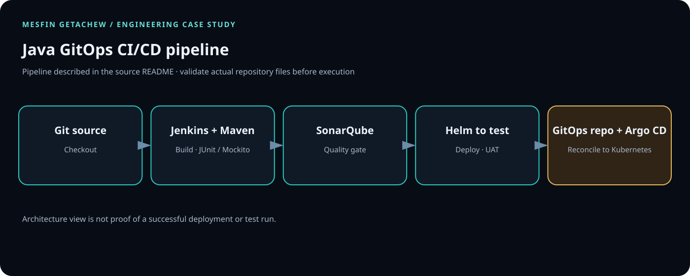

Controlled access
Apply least privilege, protect credentials, scan artifacts and require appropriate review gates.
Jenkins · Maven · SonarQube · Helm · Argo CD · Kubernetes
A quality-gated delivery path using Jenkins, Maven, SonarQube, Helm, Argo CD and Kubernetes.

01 / PROBLEM
A repeatable path through tests, quality controls and deployment improves delivery consistency. GitOps keeps desired state auditable and separates delivery from cluster reconciliation.
02 / SYSTEM FLOW
Git → tests/build → SonarQube quality gate → container image → GitOps repository → Argo CD → Kubernetes
03 / PRODUCTION CONSIDERATIONS
Apply least privilege, protect credentials, scan artifacts and require appropriate review gates.
Plan for failure, observable runtime behavior, rollback or recovery and tested runbooks.
Keep configuration versioned, modular and documented.
ARCHITECTURE / PIPELINE DESIGN
The linked source README describes a Jenkins/Maven build, JUnit and Mockito tests, SonarQube analysis, Helm deployment to a test environment, UAT, and Argo CD reconciliation to Kubernetes.

Pin the JDK and Maven versions; retain build artifacts and unit-test reports for each commit.
Fail the pipeline on test failures and configured SonarQube quality-gate violations.
Separate application build from cluster state reconciliation; promotion should be a reviewed Git change.
The source README is a setup guide rather than a complete, self-contained quick-start script. First inspect the checked-out repository and verify the required manifests are present.
git clone https://github.com/DataOpsInnovator/java-cicd-sonar-argocd-helm-k8s.git cd java-cicd-sonar-argocd-helm-k8s git ls-files find . -name pom.xml -o -name Jenkinsfile -o -name Chart.yaml
If a Maven pom.xml is present in the application directory, run mvn test package there. Do not report the described Jenkins stages as passing until you have captured a real Jenkins run, test reports, SonarQube quality-gate result, and the Argo CD sync status.
04 / ENGINEERING VALUE
Add measurable outcomes only when substantiated. No cost or performance figures have been invented for this case study.